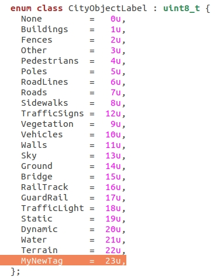
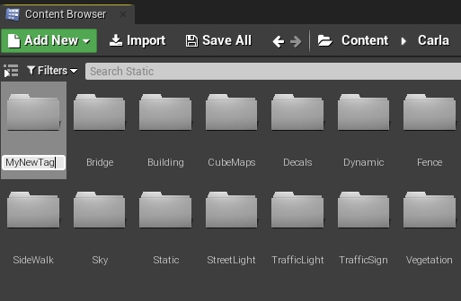
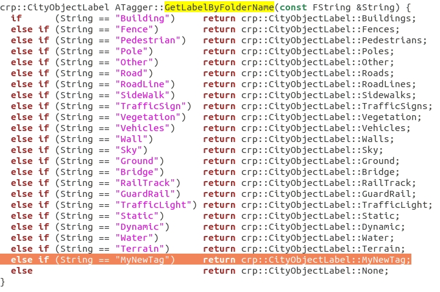
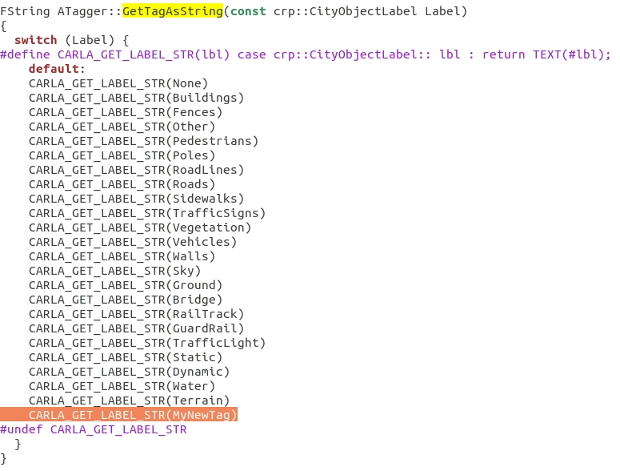
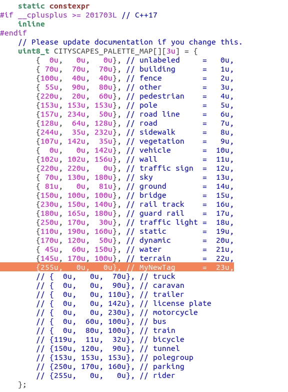

创建语义标签¶
了解如何定义语义分割的自定义标签。这些还可以添加到carla.CityObjectLabel 以过滤 carla.World 检索的边界框。
创建新的语义标签 ¶
1. 创建标签 ID ¶
打开 LibCarla/source/carla/rpc 中的 ObjectLabel.h 。使用与其余标签相同的格式在枚举末尾添加新标签。

!!! 笔记 标签不必按顺序出现。但是，按顺序列出它们是一个很好的做法。
2. 创建资产的虚幻引擎文件夹 ¶
打开虚幻引擎编辑器 并转到 Carla/Static。创建一个名为您的标签的新文件夹。

!!! 笔记 虚幻编辑器文件夹和标签不必命名相同。然而，这样做是一个很好的做法。
3. 创建虚幻引擎与代码标签的双向对应关系 ¶
3.1. 打开Unreal/CarlaUE4/Plugins/Carla/Source/Carla/Game中的 Tagger.cpp 。转到 GetLabelByFolderName 列表末尾添加您的标签。被比较的字符串是 2. 中使用的虚幻引擎文件夹的名称，因此这里使用完全相同的名称。

3.2. 在相同的 Tagger.cpp 转到 GetTagAsString 。 在开关末尾添加新标签。

4. 定义颜色代码 ¶
在 LibCarla/source/carla/image 中打开 CityScapesPalette.h 。在数组末尾添加新标签的颜色代码。

!!! 笔记
数组中的位置必须与标签 ID 相对应，在本例中为 23u.
5. 添加标记网格 ¶
新的语义标签已可供使用。只有存储在标签的虚幻引擎文件夹内的网格才会被标记为此类。将相应的网格移动或导入到新文件夹中，以便正确标记。
将标签添加到 carla.CityObjectLabel ¶
这一步与语义分割没有直接关系。但是，这些标签可用于过滤carla.World 中的边界框查询。为此，必须将标签添加到PythonAPI 中的 carla.CityObjectLabel 枚举中。
在 carla/PythonAPI/carla/source/libcarla 中打开 World.cpp 并在枚举末尾添加新标签。